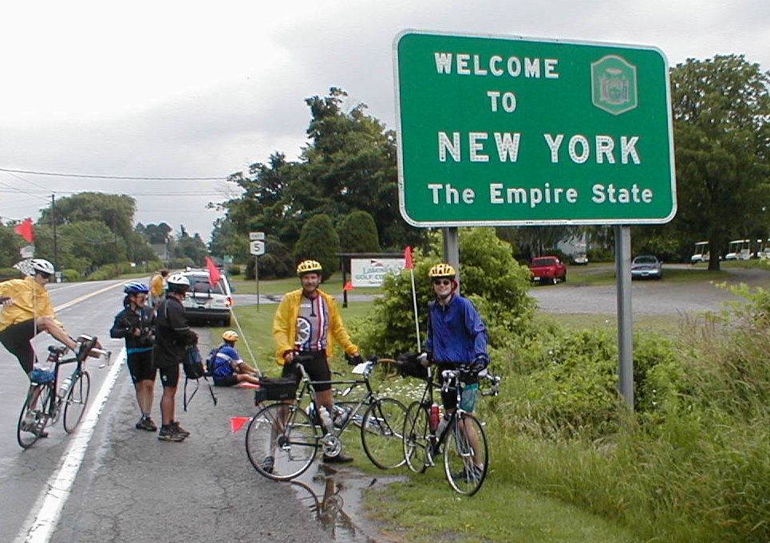

Day 41: June 22, Erie, PA to Hamburg, NYPrevious Day - Home - Next Day Photo of the DayDad and I at the New York state line, our second-to-last crossing. Keegan's LogDay 41: June 22, Erie, PA to Hamburg, NY Mileage: 85.90 milesWeather: Cold and overcast, Showers in the morning, Strong tailwinds Vertical Climb: 800 feet Riding Time: 5:00 The forecast this morning predicted light scattered sprinkles and a strong southeast wind. Wrong on both counts, the rain began as soon as we brought our bikes downstairs. After donning our rain gear and putting everything water-sensitive into baggies, we left under some pretty heavy showers. We rode out through downtown Erie, there was quite a bit of traffic for the Friday morning rush hour, but the drivers were mostly courteous. The rain let up around 10 miles out, though it didn't stop entirely until we were about 20 miles from Erie. We passed two bridges out in the early morning, each required a detour to the next bridge upstream, and we ended up with an extra 5 miles for the day. The New York state line came about 20 miles into our trip, we stopped with a group for some pictures and sand sprinkling. About 10 miles later we stopped in Barcelona at a little local convenience store for a snack. Barcelona is the home of the world's only natural gas lighthouse, we stopped briefly for a look before moving on. The riding was pretty in the morning, we were following Highway 5 which runs very near the coast of Lake Erie. Both sides of the road were lined with grape vineyards and the occasional winery, the lake was visible through breaks in the trees off to the left. The winds were very much in our favor, the cold wind blew strongly from almost directly behind us. With the help of the winds we cruised along, today was actually our fastest day yet with a 17.2 mph average. We stopped at the sag at the halfway point of the ride, dad had two flat tires just before the stop so we were running near the back of the pack. We rode on for another hour before stopping with a group at a gas station/café for some lunch (amazingly one of the best ham sandwiches I've had in a while). I wanted to buy one of the 4 foot tall concrete statues they had for sale and strap it to dad's bike, I guess he thought they were too tacky though. From there it was a cruise into Hamburg, we got to the hotel right about 2:00, not too bad for an 85 mile day. If only every day could be like today... Route rap took place behind the truck, right outside our door. For dinner we went to Denny's, which was quite an experience. To make a long story short, some of the other riders finished their dinners, their desserts, and got up to head back to the hotel before we even got served. The food was salty enough to choke a horse, but we got free pie because we had to wait so long for our food. The last of us to get served left about two hours after we arrived, we stopped at a classic car dealer for a look around on the way home. Tomorrow we ride to Canandaigua, NY, the longest ride we have remaining at 93 miles. We also have over 3,000 feet of climbing tomorrow, so it should be a pretty tough day. We only hope we can get the winds we had today... Phil's LogThe image of leaves on a rain soaked front tire is a bit like a kaleidoscope image that it dazzles with form but doesn't make sense. Glance a foot forward and it is that of the road a foot ahead. When you ride in hard rain, you find yourself looking as straight down as you can to avoid the sting of the drops. Tracy essentially said to us today, "You're on vacation. Go ride seventy nine miles in the rain." Our response, "Okay." It was pretty chilly riding out of Erie, and the rain began just as we did. It was fortunate that the rush hour traffic was traveling in the opposite direction since we needed a full lane for ourselves. Our skinny, high pressure tires, in addition to being bumpy, throw up quite a rooster tail of big drops. You do not want to ride behind one for ten feet or so, but a foot offset is fine. And so we left Pennsylvania. By the time we reached the New York State line, the showers had become light and infrequent. The passing front was followed by a strong and very favorable wind. At one point I found myself effortlessly cruising at 24 mph. Well, not effortlessly, but I wasn't putting too much energy into the bike. It was unusual to be below 15 and once the rain let up, the 79 miles were a "breeze". we passed but one winery, but acre after acre of grape arbors. What a gradual but sure change of the use of land we have seen, from cactus to grain and now to grapes. There were a few roadside vegetable stands open with sweet corn (from the South, I'm sure) and tomatoes and watermelons, but nothing one would want to take along on bicycle, especially if it needed to be cooked. Just inside the New York line, I thought I spotted an old lighthouse, then it was gone. There was a store nearby and I stopped for my 7-Up fix, and asked about it. The nice woman there had a post card about the lighthouse. It was built in 1828, it was short and all stone, and it was the only lighthouse to be illuminated by natural gas. the gas was piped about a mile in wooden pipe! The Barcelona Lighthouse is now a part of a small park, and certainly deserved a special stop. Hamburg is a small city, in fact from my many days as a New York citizen, I hadn't remembered even that it existed. We find ourselves tonight t an older motel, which I personally enjoy above the fancier ones. It's chilly on the porch, and time to go in. I should probably make it public that over the course of the ride, I have changed employers. In case I was not granted a leave-of-absence from Rolls to take this ride, my "Plan B" was to find another job. Though the leave came, I also received a nice offer from a small company that I had become familiar with from a Christian study group. They made a nice offer that I have accepted, and I think the task will be a closer fit to my strengths. I look forward to the new "family" but will certainly miss my friends at Rolls, and those I had come to know at Centrax, my primary customer in Newton Abbot, Devon, England. Perhaps some of the friendships will survive. The new company, Catheter Research, manufactures catheter and other medical devices, and needs an industrial engineer to make their processes flow more smoothly. I'm excited. Lots more of New York comes first. Tomorrow is a day of climbing and the Finger Lakes. Lastly, please recall that this is a ride for charity. Many have pledged, and I thank you. And I have learned that I have some anonymous followers. From you too, I hope for a contribution. There are three suggested levels: A penny per mile, or $34.36, a mil per mile or $3.43, or hopes and prayers, which are important too. If you wish to make a contribution directly without going through me, please do so to: Diabetes Youth Foundation, 1300 E. Main, Danville, IN 46122. If you have pledged, please let me know you made your contribution directly so I won't "chase: you. If you wish to make a donation anonymously, that's fine. By either method, 100% of your donation goes to the foundation, and is tax deductible. And if you are following this story, please follow your heart too. I'll write again in the next few evenings about the foundation. |
{kind=link}